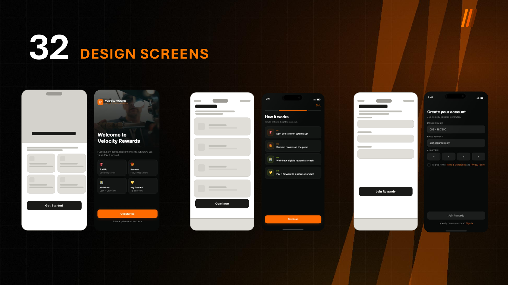

Visibility
Customers need to understand their balance and what it is worth.
Designing a petrol-retail rewards experience around the real rhythm of a fuel stop, with visible value, payment freedom, flexible redemption and intentional tipping.
Velocity Rewards is a fuel-retail loyalty concept exploring how clearer reward visibility, flexible use and in-journey tipping could make the experience more useful. The work began with a market audit—not direct user research—so the proposed behaviours are hypotheses to validate.
The audit compared Sasol Rewards, BP Rewards, Engen 1App, Discovery Vitality Money, eBucks and Tappy. It highlighted three opportunity areas: making reward value visible, reducing friction in redemption, and exploring digital tipping within the fuel journey.
Customers need to understand their balance and what it is worth.
Options lose value when thresholds and redemption rules are hard to understand.
Digital tipping may fit naturally into the refuelling journey, but needs validation.
The archetypes in the full deck are hypotheses, not interview-derived personas.
Hypothesis: making value visible will support return engagement.
Hypothesis: customers value earning without being tied to one payment card.
Hypothesis: access to cash may make rewards more useful to some customers.
Hypothesis: customers may value a simple digital way to thank attendants.
These bets should be tested before committing to a production MVP.
The proposed journey connects fuel payment, one visible rewards balance, redemption or withdrawal, and optional tipping. The aim is to reduce switching and keep each action understandable in the context of a station visit.

The competitor review highlighted differences in how programmes present value, redemption rules and access. This is a market observation, not direct user evidence.
The concept brings balances, earning and redemption into a clearer flow, while exploring card-agnostic earning and tipping as separate hypotheses.
Ask customers to find their balance, explain its value and complete a redemption task. Test tipping with attendants and station operators before assuming it fits operations.
A narrower MVP could be easier to explain and build, but may leave some reward needs unsupported.
Balance visibility, earning, redemption and optional tipping in one journey, rather than treating them as unrelated features.
Cash-out and tipping may add payment, fraud, support and station-workflow considerations. Validate feasibility and customer value before treating them as MVP commitments.
The prototype covers onboarding, rewards tracking, redemption, withdrawal, fuel payment, tipping and wallet management. It provides enough of the experience to evaluate the complete value loop rather than isolated screens.

Run task-based usability tests with motorists and attendants, validate comprehension of balances and redemption, test whether tipping fits station operations, and pilot against return rate, service-time impact and programme cost.
Status: product concept · not shipped · hypotheses and outcomes remain unvalidated.
Download full case study ↓